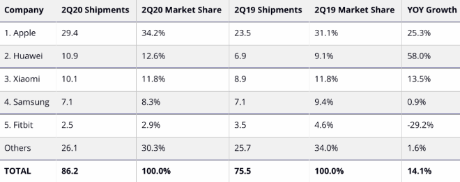

September 2020
on current events
Tim Cook commemorated the 19th Amendment:
100 years ago, the 19th Amendment brought America another step closer toward equality. Today and always, we must make sure that everyone can participate in our democracy to realize its full potential—ever striving toward a more perfect, equal union.
— Tim Cook (@tim_cook) August 26, 2020
iOS 13.7 has been released and it includes support for Exposure Notifications Express. The Express Option does not require an app.
From Apple and Google’s announcement today:
`As the next step in our work with public health authorities on Exposure Notifications, we are making it easier and faster for them to use the Exposure Notifications System without the need for them to build and maintain an app. Exposure Notifications Express provides another option for public health authorities to supplement their existing contact tracing operations with technology without compromising on the project's core tenets of user privacy and security. Existing apps using the Exposure Notification API will be compatible with Exposure Notifications Express, and we are committed to supporting public health authorities that have deployed or are building custom apps.`
More evidence by scientists that Covid-19 is aerosolized: COVID-19 Is Transmitted Through Aerosols. We Have Enough Evidence, Now It Is Time to Act, an overview published by Time Magazine. The author is a Professor of Chemistry and a Fellow of the Cooperative Institute for Research in Environmental Sciences at the University of Colorado-Boulder and a Fellow of the American Association for Aerosol Research and the American Geophysical Union. He gives a thorough overview of the topic. He has been joined by 239 other scientists in a letter to the WHO to amend their recommendations. He likens aerosols to smoke from a cigarette: it lingers in an area for a little while and those who walk through it and breathe are exposed even if they observe social-distancing recommendations.
Livinguard uses technology has been shown to deactivate viruses in independent tests conducted at academic laboratories and applies it to fabrics. Now they are making masks which have the potential to deactivate Covid-19 based on testing dne at leading universities such as the U of AZ, and the Free University of Berlin, Germany. The masks are rated for protection, they are gently washable, and their treatment lasts about 210 days (30 washes). (Use the code bubble for 15% discount, thanks to the podcast In the Bubble, recommended by Olga in our previous meeting.)
How one teacher is preparing for a year like no other, with support from Apple, reports Apple via their news room. `Warren is one of nearly 500 educators who participated in a massive virtual coding academy this summer as part of Apple’s Community Education Initiative (CEI), designed to bring coding, creativity, and workforce development opportunities to learners of all ages and to communities that are traditionally underrepresented in technology. ‘
other Apple and iOS news
[ RUMOR ] Second half of October is when Apple is rumored to be planning a hold a live vent, to unveil iPhone 12 models, Apple Watch Series 6, and long-rumored AirTags, according to a report from Japanese site Mac Otakara.
Apple is showing some signs it may soon launch a search engine to compete against Google, reports Coywolf.
[ RUMOR ] Bloomberg reports that a Apple is going to release a new iPad Air and 2 models of Apple Watch this fall.
Apple featured Oprah Winfrey in Apple Books: Oprah named “Caste: The Origins of Our Discontents” her most important Book Club selection ever. You can download a free sample or buy the book on Apple Books.
Today’s release of iOS 13.7 also provides security updates, bug fixes, and introduces new Memoji stickers and iCloud Drive folder sharing from the Files app.
When will Apple release iOS 14? Let the speculation begin. Answers: likely September or October! 9to5mac lists out the possibilities.
An overview of Apple Pencil improvements with iOS 14:
iPhone can tell if you’re too drunk to drive, reports CultofMac. This is promising as a potential way to reduce DUI’s but it's currently a proof of concept, as it has limitations.
Here is the paper: A Preliminary Study Using Smartphone Accelerometers to Sense Gait Impairments Due to Alcohol Intoxication.
iOS 14 beta
iOS 14 Hidden Features You Need to Know About, an overview from MacRumors, based on the latest beta:
iOS and Watch apps
Lee points us to Covid Watch Arizona, a free app that the U of AZ is using. Anyone in Arizona can use it. `Let your smartphone notify you to potential exposure to COVID-19–using fully anonymous Bluetooth signals–and help stop the spread of coronavirus in Arizona.’ The app is developed in partnership with the Arizona Department of Health Services (ADHS).’ The app uses the Apple/Google API for exposure notification while maintaining privacy and anonymity.
Olga reported using the app since Aug 19. On Aug 31, she received a notification. Here are screenshots:
Clicking on the dates the app reported showed the following info: attenuation (4 levels), each with the number of minutes of exposure and the assessment of risk (level 6).
Finally, the app has some info and FAQ links. It still seems to be in development overall, they probably tried to get it out the door as UA classes were starting. It will probably include more relevant descriptions over time. Still, its main function works. Olga concluded that Covid-19 is definitely spread in the Tucson community.
For more info, see Apple's overview and Google's overview. Here is Google's API description (with a table on attenuation and risks), and here is the Covid Watch app’s references on attenuation.
FilmLab is an app that lets you convert film for macOS that comes with an iOS companion app. `It converts digital captures of film negatives into beautiful color or black-and-white images. It uses a custom processing engine designed to give photographers the same kind of creative control and analog look they’d get in the darkroom.''
With more Zoom calls and more people talking across geographies, Time Intersect is an iOS app to help you find the best times to hold a meeting or a call.
Likewise, MenuBar Clock can be useful. It's a macOS app for your menubar that gives you the time in different time zones of your choice.
AnyList continues to be one of the best and most useful iOS and MacOS apps for list-making, shopping lists, sharing them. It has been a recipe app for a while, but just recently they streamlined and improved the cooking mode of the app. You can now check off ingredients as you use them in a recipe and you can swipe to page through. Finally, they now offer drag and drop for moving meals around your calendar.
podcasts
Raiders of the Lost Yeast is an episode of the podcast Proof, by America's Test Kitchen. This episode's description: `Seamus Blackley is the creator of the Xbox. He’s also an ancient Egypt enthusiast and baking hobbyist. Yes, you heard that right. Via Twitter, he assembled a rag-tag team of specialists: an archeologist (Dr. Serena Love) and a biologist (Rich Bowman). Together, they created a grand scheme: extract dormant yeast from the nooks and crannies of ancient Egyptian pots stored in the vaults of the world’s most prestigious museums and bake bread with it.'
tips & tricks
More people report getting spam calls on their landlines or iPhones with a warning that their iCloud account has been hacked. These are spam calls. Blocking these calls usually does not help because they use different numbers. And if you make the mistake to answer once or twice, they accelerate and flood you with calls. A reminder: How to Silence Unknown Callers on Your iPhone in iOS 13.
gadgets & accessories
A Review of Plugable USB-C Multiport Adapter, by Cult of Mac. You can find Plugable here. They conclude that `There are certainly rival hubs with a lot more ports, but the Plugable USB-C Multiport Adapter includes the most-used options. It’s pocketable and reliable.' You can find it online (such as Amazon for $25.)
Pay
Apple Pay with Express Target Mode Goes Live for D.C. Metro Riders. This is a smart implementation: No need to wake your iPhone. No need for Face ID.
watch
[ RUMOR ] Apple Watch series 6 will have a blood oxygen sensor, reports 9to5mac.
IDC reported recently that Apple dominates 2Q20 wearables with 34.2% market share:

Apple employees Who Completed This Year's 'Close Your Rings' Challenge Receive Shirt and Congratulatory Card, reports MacRumors.
privacy & security
Apple's privacy push will hurt Facebook's tracking again, reports The Motley Fool. `Facebook reiterated risks, warning developers and advertisers that changes in Apple's forthcoming iOS 14 could utterly crush its ad network.' Facebook wrote in its recent quarterly filing: `We rely on data signals from user activity on websites and services that we do not control in order to deliver relevant and effective ads to our users. Our advertising revenue is dependent on targeting and measurement tools that incorporate these signals, and any changes in our ability to use such signals will adversely affect our business.`